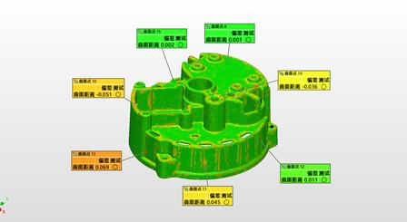
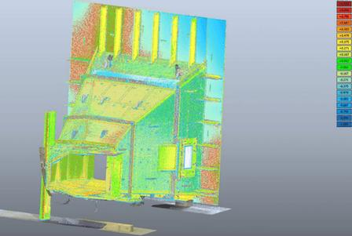
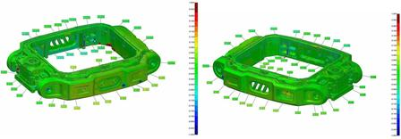

点云数据导入
支持导入 PLY、PCD、XYZ 等常见点云文件，并统一坐标与单位。
Point Cloud Intelligence
基于激光扫描点云，探索从数据预处理、几何特征提取到尺寸偏差分析的检测流程，让测量结果更直观、可复核、可追溯。

围绕点云检测任务，构建从数据导入到结果输出的完整处理能力。
支持导入 PLY、PCD、XYZ 等常见点云文件，并统一坐标与单位。
通过滤波、下采样和多视角配准，准备后续分析所需的数据。
分割局部结构，并拟合平面、圆柱等基础几何特征。
计算距离、角度、直径等参数，并与参考值进行多维对比。
在三维视图中展示特征和测量结果，并逐步完善报告导出。
系统按链式流程组织点云处理与尺寸分析，确保各环节可复核。
采集扫描数据，或导入离线点云文件。
去除离群点、下采样，并估计几何信息。
对齐多视角点云，划分局部区域或几何特征。
拟合目标几何特征，并记录参数和残差信息。
计算空间尺寸及其相对参考值的偏差。
展示检测结果，为复核和报告生成保留记录。
基于成熟开源工具构建原型。集成前请确认许可证、依赖和适用范围。
以下展示来自仓库的三张图片，作为点云检测与项目结果的视觉示意。



查看代码、了解开发进度，或参与问题反馈。
访问项目仓库 ↗